An improved voom transform for scRNA-seq data
Table of Contents
Introduction
The key idea of limma-voom (Law et al. 2014) is to transform a count matrix generated by bulk RNA-seq into two matrices, representing the mean and variance of true (log) gene expression. These matrices can then be analyzed using (heteroscedastic) Gaussian methods. However, limma-voom was developed before the development of scRNA-seq, and therefore before it was possible to measure the variance of gene expression between cells from a single donor. To address this limitation, Law et al. instead proposed to pool information across both donors and genes, estimating a LOESS trend between the mean and variance of true gene expression values across donors. \( \DeclareMathOperator\E{E} \DeclareMathOperator\Gam{Gamma} \DeclareMathOperator\N{\mathcal{N}} \DeclareMathOperator\Poi{Poisson} \DeclareMathOperator\V{V} \DeclareMathOperator\digamma{\psi} \DeclareMathOperator\trigamma{\psi^{(1)}} \newcommand\vb{\mathbf{b}} \newcommand\vc{\mathbf{c}} \newcommand\xiplus{x_{i+}} \)
Now suppose we have observed scRNA-seq data \(x_{ij}\), where \(x_{ij}\) denotes the number of molecules from gene \(j\) observed in cell \(i\). Then, there are two possible DE analysis we might be interested in. First, we might divide (some subset of) cells into two groups, and ask whether genes are differentially expressed between groups. Second, we might divide donors into groups, and test whether genes (in some subset of cells, per donor) are differentially expressed between groups. The key distinction is that single cells are the units in the first case, and donors are the units in the second case.
We can apply limma-voom without modification to the first case, because the typical log transformation corresponds to an MLE
\begin{align} x_{ij} \mid \xiplus, \theta_{ij} &\sim \Poi(\xiplus \exp(\theta_{ij}))\\ \ell \triangleq \ln p(x_{ij} \mid \xiplus, \theta_{ij}) &= x_{ij} (\ln \xiplus + \theta_{ij}) - \xiplus \exp(\theta_{ij}) + \mathrm{const}\\ \frac{\partial \ell}{\partial \theta_{ij}} &= x_{ij} - \xiplus \exp(\theta_{ij})\\ \hat\theta_{ij} &= \ln\left(\frac{x_{ij}}{\xiplus}\right). \end{align}This simple theoretical argument and empirical studies have demonstrated that applying limma-voom to scRNA-seq data can work (Soneson and Robinson 2018, Hsiao 2019). However, unlike the bulk RNA-seq case, now the notion of “variance of gene expression” within a single unit no longer makes sense. Therefore, it is unclear what precisely limma-voom is fitting in this case.
Applying limma-voom to the second case also works, because we can estimate a point mass expression model for the cells from each donor \(k\)
\begin{align} x_{ij} \mid \xiplus, \theta_j &\sim \Poi(\xiplus \exp(\theta_j))\\ \ell \triangleq \sum_i \ln p(x_{ij} \mid \xiplus, \theta_j) &= \sum_i x_{ij} (\ln \xiplus + \theta_j) - \xiplus \exp(\theta_j) + \mathrm{const}\\ \frac{\partial \ell}{\partial \theta_j} &= \sum_i x_{ij} - \xiplus \exp(\theta_j)\\ \theta_j &= \ln\left(\frac{\sum_i x_{ij}}{\sum_i \xiplus}\right)\\ \end{align}where \(\xiplus \triangleq \sum_j x_{ij}\) (Sarkar and Stephens 2020). This approach is equivalent to constructing pseudobulk data \(y_{kj} \triangleq \sum_i x_{ij} z_{ik}\), where \(z_{ik}\) indicates whether cell \(i\) came from donor \(k\), and using \(\ln(y_{kj} / y_{k+})\) as the estimated mean of true log gene expression, where \(y_{k+} \triangleq \sum_j y_{kj}\). However, the relationship between the voom-estimated variance and the true gene expression variance is unclear because the variance used by voom is between individuals, not within an individual (although there is some evidence that the two are highly correlated). Further, it is unlikely that a point mass expression model will be supported by the data.
We previously developed a method to efficiently estimate more complex expression models in large-scale scRNA-seq data sets (Sarkar et al. 2019). Here, we use that method to investigate two new possibilities for a precision weight derived from fitted expression models: (1) the inverse squared standard error of a point mass model, or (2) the inverse variance of the log true expression under a Gamma model. Specifically, we ask whether these alterantive approaches improve the power or robustness of DE analysis in scRNA-seq data.
Setup
import anndata import numpy as np import mpebpm import pandas as pd import scanpy as sc import rpy2.robjects.packages import rpy2.robjects.pandas2ri import scipy.special as sp import scipy.sparse as ss import scipy.stats as st import sqlite3 import scqtl import torch ashr = rpy2.robjects.packages.importr('ashr') limma = rpy2.robjects.packages.importr('limma') rpy2.robjects.pandas2ri.activate()
%matplotlib inline %config InlineBackend.figure_formats = set(['retina'])
import matplotlib.pyplot as plt plt.rcParams['figure.facecolor'] = 'w' plt.rcParams['font.family'] = 'Nimbus Sans'
Methods
Standard error of point mass expression model
The standard error of \(\hat\theta_j\) is analytic
\begin{align} \frac{\partial^2 \ell}{\partial \theta_j^2} &= -\sum_i \xiplus \exp(\theta_j)\\ \mathcal{I}(\mu_j) &= -\E\left[\frac{\partial^2 \ell}{\partial \mu_j^2}\right] = \sum_i \xiplus \exp(\theta_j)\\ s_j^2 &= \frac{1}{\sum_i \xiplus \exp(\theta_j)}, \end{align}where we have treated \(\xiplus\) as fixed. This treatment is justified by the fact that the Poisson measurement model for each gene arises from a Multinomial measurement model for all genes jointly, in which the total number of molecules observed is fixed rather than a sum of random variables. As an illustrative example, plot the bootstrap distribution of the \(\hat\theta_j\) against a normal density with mean \(\theta_j\) and variance \(s_j^2\) for a simple simulation.
rng = np.random.default_rng(1) n_trials = 1000 n = 100 s = 1e4 theta = -11 thetahat = [] for i in range(n_trials): x = rng.poisson(s * np.exp(theta), size=n) thetahat.append(np.log(x.sum()) - np.log(n) - np.log(s)) thetahat = np.array(thetahat)
plt.clf() plt.gcf().set_size_inches(2.5, 2.5) plt.hist(thetahat, bins=16, density=True, color='0.7') grid = np.linspace(thetahat.min(), thetahat.max(), 1000) plt.plot(grid, st.norm(loc=theta, scale=np.sqrt(1 / (np.exp(theta) * n * s))).pdf(grid), lw=1, c='k') plt.xlabel('Est ln mean gene expression') plt.ylabel('Density') plt.tight_layout()

After introducing multiplicative effects \(\vb_j\) for observed technical covariates \(\vc_i\) into the measurement model
\begin{equation} x_{ij} \mid \xiplus, \vc_i, \vb_j, \theta_j \sim \Poi(\xiplus \exp(\vc_i' \vb_j + \theta_j)), \end{equation}the standard error of \(\hat\theta_j\) also depends on \(\vc_i'\vb_j\). In contrast, if we assume the identity link
\begin{align} x_{ij} \mid \xiplus, \mu_j &\sim \Poi(\xiplus \mu_j)\\ \ell \triangleq \sum_i \ln p(x_{ij} \mid \xiplus, \mu_j) &= \sum_i x_{ij} \ln(\xiplus \mu_j) - \xiplus \mu_j + \mathrm{const}\\ \frac{\partial \ell}{\partial \mu_j} &= \sum_i \frac{x_{ij}}{\mu_j} - \xiplus\\ \hat\mu_j &= \frac{\sum_i x_{ij}}{\sum_i \xiplus}\\ \frac{\partial^2 \ell}{\partial \mu_j^2} &= -\sum_i \frac{x_{ij}}{\mu_j^2}\\ \mathcal{I}(\mu_j) &= -\E\left[\frac{\partial^2 \ell}{\partial \mu_j^2}\right] = \frac{\E[\sum_i x_{ij}]}{\mu_j^2} = \frac{\sum_i \xiplus}{\mu_j}\\ s_j^2 &= \frac{\mu_j}{\sum_i \xiplus}, \end{align}where we have used the fact that \(\sum_i x_{ij} \sim \Poi(\mu_j \sum_i \xiplus)\). Surprisingly, \(\ln \hat\mu_j = \hat\theta_j\), the standard error of \(\hat\mu_j\) increases as \(\mu_j\) increases, and the standard error does not depend on technical covariates or their effects. As a sanity check, plot the bootstrap distribution of \(\hat\mu_j\) against a normal density with mean \(\theta_j\) and variance \(s_j^2\) for a simple simulation.
rng = np.random.default_rng(2) n_trials = 1000 n = 100 s = 1e4 log_mu = -10 muhat = [] for i in range(n_trials): x = rng.poisson(s * np.exp(log_mu), size=n) muhat.append(x.sum() / (n * s)) muhat = np.array(muhat)
plt.clf() plt.gcf().set_size_inches(2.5, 2.5) plt.hist(muhat, bins=14, density=True, color='0.7') grid = np.linspace(muhat.min(), muhat.max(), 1000) plt.plot(grid, st.norm(loc=muhat.mean(), scale=np.sqrt(muhat[0] / (n * s))).pdf(grid), lw=1, c='k') plt.xlabel('Est mean gene expression') plt.ylabel('Density') plt.tight_layout()

With an analytic expression for \(s_j^2\), we can also derive a \(z\)-test for DE, where
\begin{align} \frac{\hat\theta_{1j} - \hat\theta_{0j}}{\sqrt{s_{1j}^2 + s_{0j}^2}} \sim \N(0, 1) \end{align}under the null. However, one clear issue is that the estimator (8) is biased, because
\begin{equation} \E[\ln \textstyle\sum_i x_{ij}] = \sum_{t=0}^{\infty} \ln(t) \Poi(t; \textstyle\sum_i \xiplus \exp(\theta_j)) = -\infty. \end{equation}This issue was previously noted (e.g., Lun 2018) via Taylor expansion
\begin{equation} \E[\ln x] \approx \ln \E[x] - \frac{\V[x]}{2 \E[x]^2}, \end{equation}and demonstrates that the bias is worse for lower-expressed genes. To illustrate the issue, plot the theoretical quantiles of the \(\N(\theta_j, s^2_j)\) distribution against the empirical quantiles of the (parametric, oracle) bootstrap distribution of \(\hat\theta_j\).
grid = np.linspace(0, 1, thetahat.shape[0] + 1)[1:] plt.clf() plt.gcf().set_size_inches(2.5, 2.5) plt.xscale('log') plt.yscale('log') plt.plot(grid, st.norm(loc=theta, scale=np.sqrt(1 / (np.exp(theta) * n * s))).cdf(np.sort(thetahat)), lw=1, c='k') lim = [5e-7, 1] plt.plot(lim, lim, lw=1, ls=':', c='r') plt.xlim(lim) plt.ylim(lim) plt.xlabel('Theoretical quantile') plt.ylabel('Empirical quantile') plt.tight_layout()
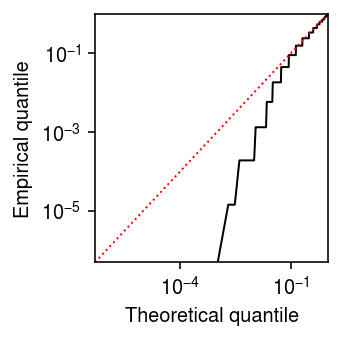
Variance of Gamma expression model
Assuming a Gamma expression model
\begin{align} \lambda_{ij} &\sim \Gam(\phi_j^{-1}, \mu_j^{-1} \phi_j^{-1})\\ \E[\ln \lambda_{ij}] &= \digamma(\phi_j^{-1}) + \ln(\mu_j \phi_j)\\ \V[\ln \lambda_{ij}] &= \trigamma(\phi_j^{-1}), \end{align}where the Gamma distribution is parameterized by shape and rate, \(\digamma(\cdot)\) denotes the digamma function, and \(\trigamma(\cdot)\) denotes the trigamma function. We previously noted that robustly estimating \(\phi_j\) is difficult, even from hundreds of cells per condition; despite this difficulty, our method can still accurately estimate the variance of true gene expression.
Controlling FDR
Given transformed data and standard errors, DE analysis is performed in two steps:
- Estimate the effect of the covariate of interest by GLS
- Estimate moderated test statistics and \(p\)-values by EB treatment of the standard errors from (1)
- Control FDR by applying e.g., the BH procedure to the \(p\)-values from (2)
Lu and Stephens 2019 describe a more powerful approach to solve (3).
Simulation
Implement a simplified DSC.
def simulate_null(dat, b=0, n_donors=1, n_cells=100, min_cells=1, seed=0): """Return AnnData object with simulated counts, and onehot matrix of labels Simulate data under the null by randomly assigning cells to donors. Simulate data with unequal sequencing depths (unequal total number of molecules observed) by subsequently applying binomial thinning (Gerard 2019) to *every* gene. dat - AnnData object b - log fold change in total number of molecules observed between groups n_donors - number of donors per group n_cells - number of cells per donor min_cells - minimum number of non-zero observations to retain genes """ assert 2 * n_donors * n_cells <= dat.shape[0] if b > 0: b = -b query = sc.pp.subsample(dat, n_obs=2 * n_donors * n_cells, random_state=seed, copy=True) sc.pp.filter_genes(query, min_cells=min_cells) onehot = ss.coo_matrix((np.ones(query.shape[0]), (np.arange(query.shape[0]), np.repeat(np.arange(2 * n_donors), n_cells)))).tocsr() if np.isclose(b, 0): return query, onehot else: if ss.isspmatrix(query.X): # Important: keep this sparse to make downsampling non-zeros easier temp = query.X[:n_donors * n_cells].astype(int).tocsr() y = ss.csr_matrix((st.binom(n=temp.data, p=np.exp(b)).rvs().astype(float), temp.indices, temp.indptr), shape=temp.shape) x = ss.vstack((y, query.X[n_donors * n_cells:]), format='csr') else: # TODO: this breaks for n=0, but treating e.g. bulk RNA-seq counts as # sparse is *very* slow x = st.binom(n=query.X.astype(int), p=np.exp(b)).rvs().astype(float) return anndata.AnnData(x, obs=query.obs, var=query.var), onehot def simulate_effects_law_2014(size, pi0=0.9): """Return effect sizes assumed by Law et al. 2014""" b = np.zeros(size) z = np.random.uniform(size=size) > pi0 s = np.random.uniform(size=size) > 0.5 b[z & s] = 2 b[z & ~s] = -2 return b def simulate_effects_pn(size, pi0=0.9, scale=1): """Return effect sizes assuming a point-Normal distribution""" b = np.zeros(size) z = np.random.uniform(size=size) > pi0 b[z] = st.norm(scale=scale).rvs(size=z.sum()) return b def simulate_study(dat, g, b=0, n_donors=1, n_cells=100, min_cells=10, seed=0): """Return AnnData object with simulated counts, onehot matrix, design matrix, and true effect size vector Simulate non-null data assuming effect size distribution g by first simulating null data, then applying binomial thinning (Gerard 2019) to effect genes. dat - AnnData object g - function which returns array of effect sizes b - log fold change in total number of molecules observed between groups n_donors - number of donors per group n_cells - number of cells per donor min_cells - minimum number of non-zero observations to retain genes """ x, onehot = simulate_null(dat, b=b, n_donors=n_donors, n_cells=n_cells, min_cells=min_cells, seed=seed) lfc = g(size=x.shape[1]) if ss.isspmatrix(x.X): # Convert to CSC to deal with half the cells at a time y = x.X.tocsc() data = y.data.copy() for i in range(y.shape[0]): if lfc[i] > 0: idx = y.indptr[i] + np.where(y.indices[y.indptr[i]:y.indptr[i+1]] > n_donors * n_cells)[0] data[idx] = st.binom(n=y.data[idx].astype(int), p=np.exp(-lfc[i])).rvs(size=len(idx)).astype(float) elif lfc[i] < 0: idx = y.indptr[i] + np.where(y.indices[y.indptr[i]:y.indptr[i+1]] < n_donors * n_cells)[0] data[idx] = st.binom(n=y.data[idx].astype(int), p=np.exp(lfc[i])).rvs(size=len(idx)).astype(float) x = anndata.AnnData(ss.csc_matrix((data, y.indices, y.indptr)), var=x.var, obs=x.obs) else: y = x.X.copy() query = lfc < 0 y[n_donors * n_cells:,query] = st.binom(n=y[n_donors * n_cells,query].astype(int), p=np.exp(lfc[query])).rvs() y[:n_donors * n_cells,~query] = st.binom(n=y[:n_donors * n_cells,~query].astype(int), p=np.exp(lfc[~query])).rvs() x = annData.AnnData(y, var=x.var, obs=x.obs) if n_donors > 1: design = np.ones((2 * n_donors, 2)) design[:n_donors,0] = 0 else: design = None return x, onehot, design, lfc def estimate_limma_voom(x, onehot, design=None, **kwargs): """Return MarrayLM object If design is None, assume rows of x are statistical units, and onehot[:,0] gives assignment of units to groups. Otherwise, assume onehot gives assignment of cells to donors, donors are statistical units, and design [:,0] gives the assignment of units to groups. x - count matrix (dense) onehot - mapping of cells to groups/donors (dense) design - design matrix for limma (dense) """ # Important: limma expects genes x samples if design is None: design = np.vstack([onehot[:,0], np.ones(x.shape[0])]).T y = limma.voom(x.T, design) else: y = limma.voom(x.T @ onehot, design) fit = limma.lmFit(y, design) return fit def estimate_point(x, onehot, **kwargs): """Return DataFrame of (bhat, se, p) Assume cells are units, and for each group estimate θ_j = log μ_j and its SE under a point mass expression model. x - count matrix (sparse) onehot - mapping of cells to groups (dense) """ # Allow -inf theta = np.log(onehot.T @ x) - np.log(onehot.T @ x.sum(axis=1, keepdims=True)) if ss.isspmatrix(theta): theta = theta.A bhat = theta[0] - theta[1] V = 1 / (onehot.T @ x) se = np.sqrt(V.sum(axis=0)) z = bhat / se p = st.norm().sf(abs(z)) return pd.DataFrame({'bhat': bhat, 'se': se, 'p': p}) def estimate_rqr(x, onehot, **kwargs): """Return DataFrame of (bhat, se, p) Assume cells are units, estimate an expression model for each group, and then estimate randomized quantile residuals for each observation (Dunn and Smyth 1996). Perform a z-test using the residuals as the data. This method is related to the sctransform method (Hafemeister and Satija 2019), which uses Pearson residuals of a GLM. The advantage of using RQRs is that they can be computed for expression models which do not give rise to observation models which can be fit using GLMs (e.g., Gamma expression models with different variances per group). Dunn and Smyth, "Randomized Quantile Residuals". J Comput Graph Stat 1996. http://www.jstor.org/stable/1390802 Hafemeister and Satija, "Normalization and variance stabilization of single-cell RNA-seq data using regularized negative binomial regression". Genome Biol 2020. https://genomebiology.biomedcentral.com/articles/10.1186/s13059-019-1874-1 x - count matrix (dense) onehot - mapping of cells to groups (dense) """ n, p = x.shape _, m = onehot.shape s = x.sum(axis=1, keepdims=True) # TODO: don't fix expression model? # Heuristic: fix total number of updates num_epochs = 6000 * 32 // x.shape[0] log_mean, log_inv_disp, logodds = mpebpm.ebpm_point_gamma(x, s, onehot=onehot, batch_size=32, num_epochs=num_epochs, shuffle=True) n = onehot @ np.exp(log_inv_disp) p = 1 / (1 + (s * (onehot @ np.exp(log_mean - log_inv_disp)))) pi0 = onehot @ sp.expit(logodds) F = st.nbinom(n, p).cdf(x - 1) F = np.where(x - 1 >= 0, pi0 + (1 - pi0) * F, F) f = st.nbinom(n, p).pmf(x) f *= (1 - pi0) f[x == 0] += pi0[x == 0] u = np.random.uniform(size=F.shape) rpp = F + u * f resid = st.norm().ppf(rpp) bhat = np.diff((onehot.T @ resid) / (onehot.sum(axis=0).reshape(-1, 1)), axis=0).ravel() V = 1 / (onehot.T @ x) se = np.sqrt(V.sum(axis=0)) z = bhat / se p = st.norm().sf(abs(z)) return pd.DataFrame({'bhat': bhat, 'se': se, 'p': p}) def estimate_wls_point(x, onehot, design=None, **kwargs): """Return MarrayLM object Instead of voom, estimate θ_j = log μ_j under a point mass expression model and its sampling variance, and use those as input to WLS. If design is None, assume rows of x are statistical units, and onehot[:,0] gives assignment of units to groups. Otherwise, assume onehot gives assignment of cells to donors, donors are statistical units, and design [:,0] gives the assignment of units to groups. x - count matrix (dense) onehot - mapping of cells to groups/donors (dense) design - design matrix for limma (dense) """ s = x.sum(axis=1, keepdims=True) if design is None: log_mean = np.log(x + 1) - np.log(s) # Important: this only reduces when there are no techncial covariates in # the measurement model w = x design = np.vstack([onehot[:,0], np.ones(x.shape[0])]).T else: log_mean = np.log(onehot.T @ x + 1) - np.log(onehot.T @ s) w = onehot.T @ x fit = limma.lm_series(log_mean.T, design=design, weights=w.T) return fit def estimate_wls_gamma(x, onehot, design, lr=1e-2, num_epochs=40, batch_size=64, shuffle=True, log_dir=None, **kwargs): """Return DataFrame of bhat, se Instead of voom, estimate E[log λ_{ij}] and V[log λ_{ij}] under a Gamma model, and use those as input to WLS. Assume donors are statistical units, onehot gives assignment of cells to donors, and design [:,0] gives the assignment of units to groups. """ # Important: this will be too slow on CPU assert torch.cuda.is_available() s = x.sum(axis=1, keepdims=True) log_mean, log_inv_disp = mpebpm.ebpm_gamma( x, s=s, onehot=onehot, lr=lr, num_epochs=num_epochs, batch_size=batch_size, shuffle=shuffle, log_dir=log_dir) # [n_donors, n_genes] m = sp.digamma(np.exp(log_inv_disp)) + log_mean - log_inv_disp w = 1 / sp.polygamma(1, np.exp(log_inv_disp)) fit = limma.lm_series(m.T, design=design, weights=w.T) return fit def estimate_moderated_t(fit): fit = limma.eBayes(fit) return fit.rx2('p.value')[:,0] def estimate_z(fit): sf = st.chi2(1).sf # Important: this has estimates for the intercept also stat = fit.rx2('coefficients') / fit.rx2('stdev.unscaled') pval = sf(np.square(stat)) return pval[:,0] def evaluate_type1(dat, b=0, alpha=0.01, n_cells=100, n_trials=1, min_cells=10): """Estimate Type 1 error to detect DE genes, treating cells as units. Use binomial thinning to simulate scenarios with unequal sequencing depth (total number of molecules observed). dat - AnnData object b - fold change in total observed molecules between groups alpha - significance level n_cells - number of cells per group n_trials - number of simulation trials min_cells - minimum number of non-zero observations to retain a gene """ result = [] for i in range(n_trials): x, onehot = simulate_null(dat, b=b, n_donors=1, n_cells=n_cells, min_cells=min_cells, seed=i) if ss.isspmatrix(x.X): x = x.X.A else: x = x.X onehot = onehot.A # Heuristic: fix total number of updates num_epochs = 6000 * 64 // x.shape[0] for method in ('limma_voom', 'wls_point'): fit = globals()[f'estimate_{method}'](x, onehot, batch_size=64, num_epochs=num_epochs) for test in ('moderated_t', 'z'): pval = globals()[f'estimate_{test}'](fit) result.append((b, n_cells, method, test, i, (pval < alpha).mean())) for method in ('point', 'rqr'): fit = globals()[f'estimate_{method}'](x, onehot, batch_size=64, num_epochs=num_epochs) result.append((b, n_cells, method, 'z', i, (fit['p'] < alpha).mean())) result = pd.DataFrame(result, columns=['b', 'n_cells', 'method', 'test', 'trial', 'fdp']) return result def evaluate_type1_by_donor(dat, n_donors, b=0, alpha=0.01, n_cells=100, n_trials=1, min_cells=10): """Estimate Type 1 error to detect DE genes, treating donors as units. Use binomial thinning to simulate scenarios with unequal sequencing depth (total number of molecules observed). dat - AnnData object b - fold change in total observed molecules between groups n_donor - number of donors per group alpha - significance level n_cells - number of cells per group n_trials - number of simulation trials min_cells - minimum number of non-zero observations to retain a gene """ result = [] for i in range(n_trials): x, onehot = simulate_null(dat, b=b, n_donors=n_donors, n_cells=n_cells, min_cells=min_cells, seed=i) if ss.isspmatrix(x.X): x = x.X.A else: x = x.X onehot = onehot.A design = np.ones((2 * n_donors, 2)) design[:n_donors,0] = 0 # Heuristic: fix total number of updates num_epochs = 6000 * 64 // x.shape[0] for method in ('limma_voom', 'wls_gamma', 'wls_point'): fit = globals()[f'estimate_{method}'](x, onehot, design=design, batch_size=64, num_epochs=num_epochs) for test in ('moderated_t', 'z'): pval = globals()[f'estimate_{test}'](fit) result.append((b, n_cells, method, test, i, (pval < alpha).mean())) result = pd.DataFrame(result, columns=['b', 'n_cells', 'method', 'test', 'trial', 'fdp']) return result def estimate_fdr_bh(fit): """Return vector of BH adjusted p-values""" return rpy2.robjects.r['p.adjust'](fit.rx2('p.value')[:,0], method='BH') def estimate_lfsr(fit): """Return vector of lfsr Implement the pipeline of Liu and Stephens 2020 https://arxiv.org/pdf/1901.10679 """ fit1 = ashr.ash( betahat=pd.Series(fit.rx2('coefficients')[:,0]), sebetahat=pd.Series(np.sqrt(((fit.rx2('df.total') - fit.rx2('df.residual')) * fit.rx2('s2.prior') + fit.rx2('df.residual') * fit.rx2('stdev.unscaled')[:,0]) / fit.rx2('df.total'))), df=fit.rx2('df.total')[0], mixcompdist='halfuniform') return ashr.get_lfsr(fit1) def evaluate_power(dat, g, b=0, fdr=0.1, n_trials=1, n_cells=100, min_cells=10): """Evaluate power to detect DE genes, assuming effect size distribution g, at specified FDR. dat - AnnData object g - function which returns array of effect sizes n_donors - number of donors per group b - log fold change in total number of molecules observed between groups fdr - False Discovery Rate n_trials - number of simulation trials n_cells - number of cells per donor min_cells - minimum number of non-zero observations to retain genes """ result = [] for i in range(n_trials): x, onehot, design, lfc = simulate_study(dat, g, b=b, n_donors=1, n_cells=n_cells, min_cells=min_cells, seed=i) if ss.isspmatrix(x.X): x = x.X.A else: x = x.X onehot = onehot.A # Heuristic: fix total number of updates num_epochs = 6000 * 64 // x.shape[0] for method in ('limma_voom', 'wls_point'): fit = globals()[f'estimate_{method}'](x, onehot, design=design, batch_size=64, num_epochs=num_epochs) # Important: always use moderated t test fit = limma.eBayes(fit) for fdr_method in ('fdr_bh', 'lfsr'): score = globals()[f'estimate_{fdr_method}'](fit) fdp = ((score < fdr) & np.isclose(lfc, 0)).mean() power = (score[~np.isclose(lfc, 0)] < fdr).mean() result.append((fdr, n_cells, method, fdr_method, i, fdp, power)) for method in ('point', 'rqr',): fit = globals()[f'estimate_{method}'](x, onehot, design=design, batch_size=64, num_epochs=num_epochs) score = rpy2.robjects.r['p.adjust'](fit['p'], method='BH') fdp = ((score < fdr) & np.isclose(lfc, 0)).mean() power = (score[~np.isclose(lfc, 0)] < fdr).mean() result.append((fdr, n_cells, method, 'fdr_bh', i, fdp, power)) result = pd.DataFrame(result, columns=['fdr', 'n_cells', 'method', 'fdr_method', 'trial', 'fdp', 'power']) return result def evaluate_power_by_donor(dat, g, n_donors, b=0, fdr=0.1, n_trials=1, n_cells=100, min_cells=10): """Evaluate power to detect DE genes, assuming effect size distribution g, at specified FDR. dat - AnnData object g - function which returns array of effect sizes n_donors - number of donors per group b - log fold change in total number of molecules observed between groups fdr - False Discovery Rate n_trials - number of simulation trials n_cells - number of cells per donor min_cells - minimum number of non-zero observations to retain genes """ assert n_donors > 1 result = [] for i in range(n_trials): x, onehot, design, lfc = simulate_study(dat, g, b=b, n_donors=n_donors, n_cells=n_cells, min_cells=min_cells, seed=i) if ss.isspmatrix(x.X): x = x.X.A else: x = x.X onehot = onehot.A # Heuristic: fix total number of updates num_epochs = 6000 * 64 // x.shape[0] for method in ('limma_voom', 'wls_gamma', 'wls_point'): fit = globals()[f'estimate_{method}'](x, onehot, design=design, batch_size=64, num_epochs=num_epochs) # Important: always use moderated t test fit = limma.eBayes(fit) for fdr_method in ('fdr_bh', 'lfsr'): score = globals()[f'estimate_{fdr_method}'](fit) fdp = ((score < fdr) & np.isclose(lfc, 0)).mean() power = (score[~np.isclose(lfc, 0)] < fdr).mean() result.append((fdr, n_donors, n_cells, method, fdr_method, i, fdp, power)) result = pd.DataFrame(result, columns=['fdr', 'n_donors', 'n_cells', 'method', 'fdr_method', 'trial', 'fdp', 'power']) return result
To generate null data, randomly sample cells from a homogeneous population, and randomly assign labels. Use 10X v3 PBMC data, which has more molecules observed per sample on average.
dat = anndata.read_h5ad('/scratch/midway2/aksarkar/modes/10k_pbmc_v3.h5ad')
Results
Accuracy of estimation
We previously evaluated mpebpm by simulating
from a point-Gamma expression model. Now, simulate from a Gamma model, and
evaluate the accuracy of estimating \(\E[\ln\lambda_{ij}]\) and
\(\V[\ln\lambda_{ij}]\).
def evaluate(num_samples, num_mols, num_trials=10, **kwargs): # Important: generate all of the samples for each trial in one shot, and use # one-hot encoding to get separate estimates args = [(num_samples * num_trials, num_mols, log_mu, log_phi, -1000, None, None, None) for log_mu in np.linspace(-12, -6, 7) for log_phi in np.linspace(-4, 0, 5)] x = np.concatenate([scqtl.simulation.simulate(*a)[0][:,:1] for a in args], axis=1) x = ss.csr_matrix(x) s = num_mols * np.ones((x.shape[0], 1)) onehot = np.zeros((num_samples * num_trials, num_trials)) onehot[np.arange(onehot.shape[0]), np.arange(onehot.shape[0]) // num_samples] = 1 onehot = ss.csr_matrix(onehot) # Important: this is analytic theta = mpebpm.sgd.ebpm_point(x.A, s=s, onehot=onehot.A) log_mu, neg_log_phi = mpebpm.sgd.ebpm_gamma(x, s=s, onehot=onehot, **kwargs) result = pd.DataFrame( [(a[0] // num_trials, int(a[1]), int(a[2]), int(a[3]), int(a[4]), a[-1], trial) for a in args for trial in range(num_trials)], columns=['num_samples', 'num_mols', 'log_mu', 'log_phi', 'logodds', 'fold', 'trial']) result['theta_hat'] = theta.ravel(order='F') result['log_mu_hat'] = log_mu.ravel(order='F') result['log_phi_hat'] = -neg_log_phi.ravel(order='F') # Important: sign flipped in scqtl.simulation.simulate result['mean_log'] = sp.digamma(np.exp(-query['log_phi'])) + query['log_mu'] + query['log_phi'] result['var_log'] = sp.polygamma(1, np.exp(-result['log_phi'])) result['mean_log_hat'] = sp.digamma(np.exp(-result['log_phi_hat'])) + result['log_mu_hat'] + result['log_phi_hat'] result['var_log_hat'] = sp.polygamma(1, np.exp(-result['log_phi_hat'])) return result
Run the simulation.
result = [evaluate(num_samples=num_samples, num_mols=num_mols, batch_size=32, num_epochs=num_epochs, log_dir=f'runs/mpebpm/gamma-sim-{num_mols}-{num_samples}/') for num_mols in (10000, 100000) # Important: for fixed batch size, having more samples means more # updates to each parameter per epoch for num_samples, num_epochs in zip((100, 1000), (400, 40))] pd.concat(result).to_csv('/scratch/midway2/aksarkar/ideas/mpebpm-gamma-sim.txt.gz', sep='\t')
Read the results.
result = pd.read_csv('/scratch/midway2/aksarkar/ideas/mpebpm-gamma-sim.txt.gz', sep='\t', index_col=0)
Compare the estimated \(\E[\ln\lambda_{ij}]\) to the ground truth.
plt.clf() fig, ax = plt.subplots(2, 2, sharex=True, sharey=True) fig.set_size_inches(4.5, 4.5) lim = [-20, -5] for a, (k, g) in zip(ax.ravel(), result.groupby(['num_samples', 'num_mols'])): a.scatter(sp.digamma(np.exp(-g['log_phi'])) + g['log_mu'] + g['log_phi'], sp.digamma(np.exp(-g['log_phi_hat'])) + g['log_mu_hat'] + g['log_phi_hat'], s=1, c='k', alpha=0.3) a.plot(lim, lim, lw=1, ls=':', c='r') a.set_xlim(lim) a.set_ylim(lim) a.set_title(f'$n$={k[0]}, $s$={k[1]}') a.set_xlabel('True $\mathrm{E}[\ln\ \lambda]$') for a in ax: a[0].set_ylabel('Estimated $\mathrm{E}[\ln\ \lambda]$') fig.tight_layout()
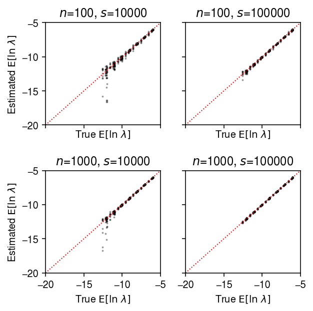
Estimate \(\E[\ln\lambda_{ij}]\) under a point mass expression model, and compare to the ground truth.
plt.clf() fig, ax = plt.subplots(2, 2, sharex=True, sharey=True) fig.set_size_inches(4.5, 4.5) lim = [-15, -5] for a, (k, g) in zip(ax.ravel(), result.groupby(['num_samples', 'num_mols'])): a.scatter(sp.digamma(np.exp(-g['log_phi'])) + g['log_mu'] + g['log_phi'], g['theta_hat'], s=1, c='k', alpha=0.3) a.plot(lim, lim, lw=1, ls=':', c='r') a.set_xlim(lim) a.set_ylim(lim) a.set_title(f'$n$={k[0]}, $s$={k[1]}') a.set_xlabel('True $\mathrm{E}[\ln\ \lambda]$') for a in ax: a[0].set_ylabel('Estimated $\mathrm{E}[\ln\ \lambda]$') fig.tight_layout()
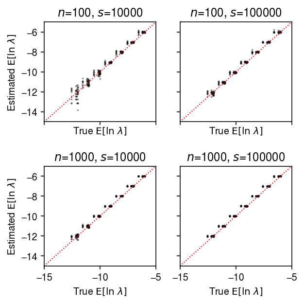
Compare the estimated \(\V[\ln\lambda_{ij}]\) to the ground truth.
plt.clf() fig, ax = plt.subplots(2, 2, sharex=True, sharey=True) fig.set_size_inches(4.5, 4.5) lim = [1e-4, 1e2] for a, (k, g) in zip(ax.ravel(), result.groupby(['num_samples', 'num_mols'])): query = g a.set_xscale('log') a.set_yscale('log') a.scatter(query['var_log'], query['var_log_hat'], s=1, c='k', alpha=0.2) a.plot(lim, lim, lw=1, ls=':', c='r') a.set_xlim(lim) a.set_ylim(lim) a.set_title(f'$n$={k[0]}, $s$={k[1]}') a.set_xlabel('True $\mathrm{V}[\ln\ \lambda]$') for a in ax: a[0].set_ylabel('Estimated $\mathrm{V}[\ln\ \lambda]$') fig.tight_layout()

Compare the estimated \(\V[\ln\lambda_{ij}]\) to the ground truth, restricting to genes with \(\ln\mu > -11\).
plt.clf() fig, ax = plt.subplots(2, 2, sharex=True, sharey=True) fig.set_size_inches(4.5, 4.5) lim = [1e-4, 1e2] for a, (k, g) in zip(ax.ravel(), result.groupby(['num_samples', 'num_mols'])): query = g[g['log_mu'] > -10] a.set_xscale('log') a.set_yscale('log') a.scatter(query['var_log'], query['var_log_hat'], s=1, c='k', alpha=0.2) a.plot(lim, lim, lw=1, ls=':', c='r') a.set_xlim(lim) a.set_ylim(lim) a.set_title(f'$n$={k[0]}, $s$={k[1]}') a.set_xlabel('True $\mathrm{V}[\ln\ \lambda]$') for a in ax: a[0].set_ylabel('Estimated $\mathrm{V}[\ln\ \lambda]$') fig.tight_layout()
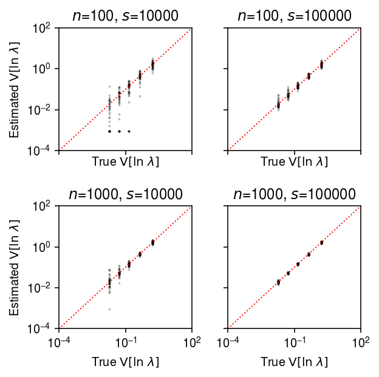
Estimation of true effect size distribution
To estimate power controlling FDR, we need to make an assumption about the
true distribution of effect sizes. We will make a data-driven assumption by
estimating the true distribution of effect sizes, given observed effect
sizes and standard errors output by limma-voom on a constructed problem
using ashr.
dat = anndata.read_h5ad('/scratch/midway2/aksarkar/ideas/zheng-10-way.h5ad')
Construct a problem comparing B cells to cytotoxic T cells. Randomly assign 50 sorted cells to each of 128 donors within each cell type.
x1, onehot1 = simulate_null(dat[dat.obs['cell_type'] == 'b_cells'], n_donors=128, n_cells=50, min_counts=1, to_array=False) x2, onehot2 = simulate_null(dat[dat.obs['cell_type'] == 'cytotoxic_t'], n_donors=128, n_cells=50, min_counts=1, to_array=False) mix = x1.concatenate(x2) sc.pp.filter_genes(mix, min_counts=10) onehot = ss.block_diag([onehot1, onehot2], format='csr') design = np.ones((256, 2)) design[:128,0] = 0
Fit limma-voom, followed by EB shrinkage of standard errors.
fit0 = limma.eBayes(estimate_limma_voom(mix.X.A, onehot, design))
Fit ashr, using the moderated standard errors and degrees of freedom.
ashr = rpy2.robjects.packages.importr('ashr') fit1 = ashr.ash( betahat=pd.Series(fit0.rx2('coefficients')[:,0]), sebetahat=pd.Series(np.sqrt((fit0.rx2("df.prior") * fit0.rx2("s2.prior") + fit0.rx2("df.residual") * fit0.rx2("stdev.unscaled")[:,0]) / fit0.rx2("df.total"))), df=fit0.rx2('df.total')[0], mixcompdist='halfuniform')
Look at the fitted prior distribution of true effects. Find an analytic distribution whose tail behavior is close enough.
cm = plt.get_cmap('Paired') grid = np.linspace(-3, 3, 1000) F = ashr.cdf_ash(fit1, grid).rx2('y').ravel() F2 = st.t(scale=0.1, df=1).cdf(grid) plt.clf() plt.gcf().set_size_inches(4.5, 2.5) plt.plot(grid, F, lw=1, c=cm(0), label='ashr') plt.plot(grid, F2, lw=1, c=cm(1), label=f'$t_1(0, 0.1^2)$') plt.axvline(x=0, lw=1, ls=':', c='0.5') plt.legend(frameon=False) plt.xlabel('Prior effect size') plt.ylabel('CDF') plt.tight_layout()

Simulation sanity check
As a sanity check, use bulk RNA-seq data from GTEx v6 lung.
dat = anndata.AnnData(rpy2.robjects.r['readRDS']('/project2/gilad/joycehsiao/dsc-log-fold-change/dsc/data/gtex_lung.rds').T)
n_donors = 4 x, onehot = simulate_null(dat, n_donors=2 * n_donors, n_cells=1, to_dense=True, min_counts=2000, seed=1) design = np.ones((2 * n_donors, 2)) design[:n_donors,0] = 0 (estimate_moderated_t(estimate_limma_voom(x, onehot, design)) < 0.01).mean()
0.005917682388270624
np.random.seed(3) pi0 = 0.9 z = np.random.uniform(size=x.shape[1]) > pi0 s = np.random.uniform(size=x.shape[1]) > 0.5 x1 = x[:n_donors].copy() x1[:,z & s] = st.binom(n=x1[:,z & s].astype(int), p=0.5).rvs() x2 = x[n_donors:].copy() x2[:,z & ~s] = st.binom(n=x2[:,z & ~s].astype(int), p=0.5).rvs() y = np.vstack([x1, x2]) fit = estimate_limma_voom(y, onehot, design) fit = limma.eBayes(fit) score = estimate_fdr_bh(fit) (score[z] < 0.1).mean(), (score[~z] < 0.1).mean()
(0.33662477558348297, 0.0025470219435736676)
Type 1 error rate (single cells as units)
Simulate null data, varying the number of cells per group.
result = pd.concat( evaluate_type1(dat, n_cells=n_cells, min_cells=n_cells, n_trials=50) for n_cells in (10, 100, 1000))
Plot the distribution of Type 1 errors in each trial.
plt.clf() fig, ax = plt.subplots(1, 3) fig.set_size_inches(5.5, 2.5) labels = ['LV-EB', 'LV-Z', 'PM-Z', 'SE-EB', 'SE-Z'] for a, (t, g) in zip(ax, result.groupby('n_cells')): a.boxplot(g.pivot_table(columns='trial', index=['method', 'test'], values='fdp'), widths=0.35, medianprops={'color': 'k'}, flierprops={'marker': '.', 'markersize': 2}) a.axhline(y=0.01, c='r', lw=1, ls=':') a.set_xticklabels(labels, rotation=90) a.set_xlabel('Method') a.set_title(f'$n$={t}') ax[0].set_ylabel('Type 1 error rate') fig.tight_layout()

To generate null data with systematic differences in sequencing depth, follow the scheme above, then apply binomial thinning with \(p = 0.5\) to every gene.
result = dict() for n_cells in (25, 50, 100): result[n_cells] = evaluate_type1(dat, b=np.log(2), n_cells=n_cells, min_cells=n_cells, n_trials=50) result = pd.concat(result).reset_index(drop=True)
plt.clf() fig, ax = plt.subplots(1, 3) fig.set_size_inches(5.5, 2.5) labels = ['LV-EB', 'LV-Z', 'PM-Z', 'SE-EB', 'SE-Z'] for a, (t, g) in zip(ax, result.groupby('n_cells')): a.boxplot(g.pivot_table(columns='trial', index=['method', 'test'], values='fdp'), widths=0.35, medianprops={'color': 'k'}, flierprops={'marker': '.', 'markersize': 2}) a.axhline(y=0.01, c='r', lw=1, ls=':') a.set_xticklabels(labels, rotation=90) a.set_xlabel('Method') a.set_title(f'$n$={t}') ax[0].set_ylabel('Type 1 error rate') fig.tight_layout()
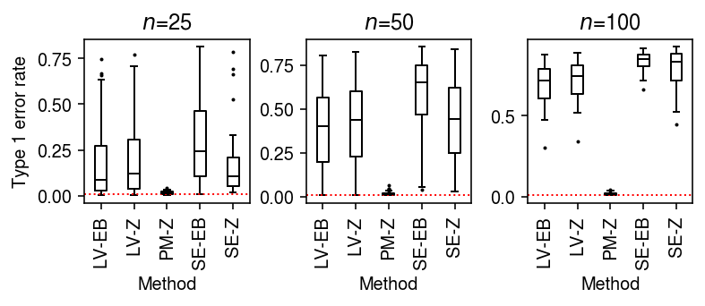
As an alternative view, fix the number of cells \(n=100\) and vary the difference in sequencing depth.
result = pd.concat( evaluate_type1(dat, b=b, n_cells=100, min_cells=100, n_trials=50) for b in np.log(np.linspace(1, 2, 4)) )
plt.clf() fig, ax = plt.subplots(1, 4) fig.set_size_inches(6.5, 2.5) labels = ['LV-EB', 'LV-Z', 'PM-Z', 'SE-EB', 'SE-Z'] for a, (b, g) in zip(ax, result.groupby('b')): a.boxplot(g.pivot_table(columns='trial', index=['method', 'test'], values='fdp'), widths=0.35, medianprops={'color': 'k'}, flierprops={'marker': '.', 'markersize': 2}) a.axhline(y=0.01, c='r', lw=1, ls=':') a.set_xticklabels(labels, rotation=90) a.set_xlabel('Method') a.set_title(f'$b$={np.exp(b):.2g}') ax[0].set_ylabel('Type 1 error rate') fig.tight_layout()
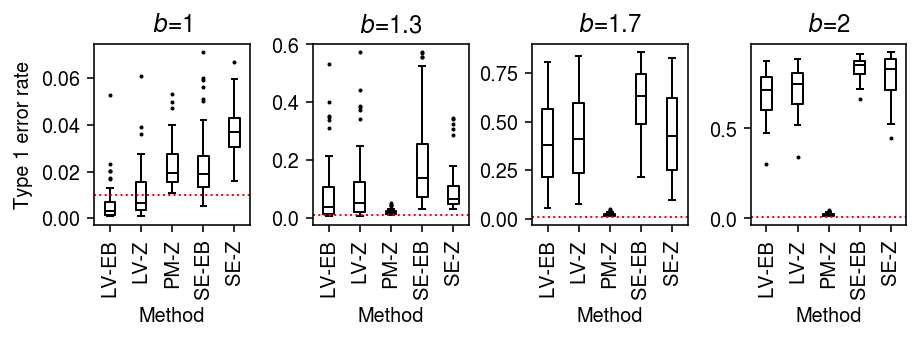
Unequal size factors
To generate single cells with unequal size factors, combine simulated doublets from sorted cells in one group.
dat = anndata.read_h5ad('/scratch/midway2/aksarkar/ideas/zheng-10-way.h5ad') n_cells = 100 x1, onehot1 = simulate_null(dat[dat.obs['cell_type'] == 'b_cells'], n_donors=1, n_cells=n_cells, min_counts=0, to_dense=False) x2, onehot2 = simulate_null(dat[dat.obs['cell_type'] == 'b_cells'], n_donors=n_cells, n_cells=2, min_counts=0, to_dense=False) mix = ss.vstack([x1, onehot2.T @ x2], format='csr') mix = anndata.AnnData(mix) # Estimate the global mean for filtering genes thetahat = np.log(mix.X.A.sum(axis=0) + 1) - np.log(mix.X.sum()) onehot = ss.block_diag([onehot1, np.ones((100, 1))], format='csr')
0 - 06711880-dce2-448e-9b52-b1b94f6d7c9e
Fit limma-voom, followed by EB shrinkage of standard errors. Report the
number of false positives (\(\alpha < 0.01\)), and the number of genes
tested.
query = thetahat > -11 (estimate_moderated_t(estimate_limma_voom(mix[:,query].X.A, onehot.A)) < 0.01).mean(), query.sum()
(0.9590070598952403, 4391)
Repeat the analysis for a larger number of cells.
n_cells = 1000 x1, onehot1 = simulate_null(dat[dat.obs['cell_type'] == 'b_cells'], n_donors=1, n_cells=n_cells, min_counts=0, to_dense=False, seed=1) x2, onehot2 = simulate_null(dat[dat.obs['cell_type'] == 'b_cells'], n_donors=n_cells, n_cells=2, min_counts=0, to_dense=False, seed=2) mix = ss.vstack([x1, onehot2.T @ x2], format='csr') mix = anndata.AnnData(mix) # Estimate the global mean for filtering genes thetahat = np.log(mix.X.A.sum(axis=0) + 1) - np.log(mix.X.sum()) onehot = ss.block_diag([onehot1, np.ones((n_cells, 1))], format='csr')
query = thetahat > -11 (estimate_moderated_t(estimate_limma_voom(mix[:,query].X.A, onehot.A)) < 0.01).mean(), query.sum()
(0.9706529713866471, 4089)
Fit a point mass expression model to each group.
theta = np.log(onehot.T @ mix.X[:,query].A + 1) - np.log(onehot.T @ mix.X.sum(axis=1)).A
Fit a Gamma expression model to each group.
log_mu, neg_log_phi = mpebpm.sgd.ebpm_gamma( mix.X[:,query].A, s=mix.X.sum(axis=1).A, onehot=onehot.A, batch_size=32, num_epochs=1000, log_dir='runs/mpebpm/b_cells-sim-unequal-s')
Compare the estimated mean log expression for each gene under the Gamma model to the estimate under the point mass model.
plt.clf() fig, ax = plt.subplots(1, 2, sharey=True) fig.set_size_inches(4, 2.5) lim = [-12, -2] for a, y, t in zip(ax, [theta.A, log_mu], ['Point mass', 'Gamma']): a.scatter(y[0], y[1], c='k', s=1, alpha=0.1) a.plot(lim, lim, lw=1, ls=':', c='r') a.set_xlim(lim) a.set_ylim(lim) a.set_title(t) a.set_xlabel('$\mathrm{E}[\ln\ \lambda]$ (size $s$)') ax[0].set_ylabel('$\mathrm{E}[\ln\ \lambda]$ (size $2s$)') fig.tight_layout()
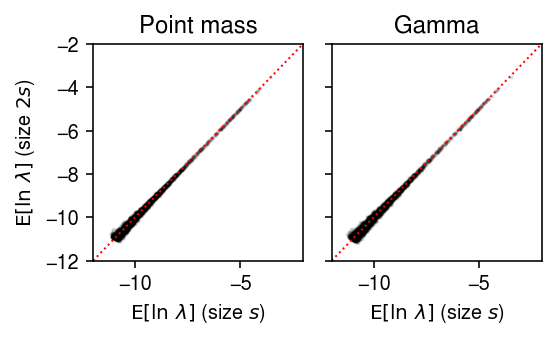
The problem seems to be that in limma, observed \(x_{ij} = 0\) are
treated as having \(\ln\lambda_{ij} = -\ln\xiplus\). This treatment makes
sense, because observing a zero is strong information that true gene
expression is not bigger than \(1 / \xiplus\); however, it is clear that
with double \(\xiplus\), observing a zero further bounds true gene
expression. Therefore, limma is expected to identify all genes as
“differentially expressed” in this scenario. This problem cannot be solved
by using the posterior mean of gene expression under e.g., Gamma models for
each group instead, because the posterior mean is
and we have shown empirically that the prior means are equal. Therefore, it will still be the case that the posterior means for observed zeros will be systematically different between two groups with systematically different size factors. Suppose instead we use the estimate \(\hat\theta_{jk}\) under a point mass model and its estimated standard error to compute a \(z\)-score.
# Important: this only reduces when there is no design matrix s2 = 1 / (onehot.T @ mix.X[:,query].A) z = (theta[0].ravel() - theta[1].ravel()) / np.sqrt(s2.sum(axis=0)) (st.norm().sf(abs(z)) < 0.01).mean()
0.016385424309122036
Plot the distribution of \(z\)-scores in this simulation against a standard normal density (to make sure we don’t need to use a \(t\) distribution instead).
grid = np.linspace(-4, 4, 1000) plt.clf() plt.gcf().set_size_inches(2.5, 2.5) plt.hist(z, bins=11, color='0.7', density=True) plt.plot(grid, st.norm().pdf(grid), lw=1, c='k') plt.xlabel('$z$-score') plt.ylabel('Density') plt.tight_layout()

Anti-conservative \(z\)-test
x, onehot = simulate_null(dat, n_donors=1, n_cells=100, min_cells=100, seed=3) y = x.X.A.copy() # for j in range(y.shape[1]): # temp = y[:,j].copy() # np.random.shuffle(temp) # y[:,j] = temp theta = np.log(onehot.T @ y) - np.log(onehot.T @ y.sum(axis=1, keepdims=True)) bhat = theta[0] - theta[1] V = 1 / (onehot.T @ y) se = np.sqrt(V.sum(axis=0)) z = bhat / se p = st.norm().sf(abs(z))
grid = np.linspace(-5, 5, 1000) plt.clf() plt.gcf().set_size_inches(3, 3) plt.hist(bhat / se, bins=21, density=True, color='0.7') plt.plot(grid, st.norm().pdf(grid), lw=1, c='k') plt.xlabel('$z$-score') plt.ylabel('Density') plt.tight_layout()
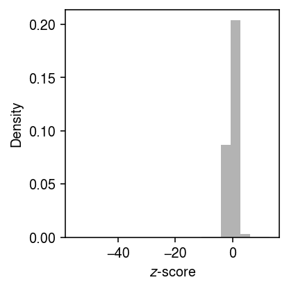
lim = [1e-4, 1] cm = plt.get_cmap('Dark2') plt.clf() plt.gcf().set_size_inches(3, 3) plt.xscale('log') plt.yscale('log') for i, (F, label) in enumerate(zip([st.norm()], ['N(0, 1)'])): plt.plot(np.linspace(0, 1, fit.shape[0] + 1)[1:], np.sort(F.cdf(fit['bhat'] / fit['se'])), lw=1, c=cm(i), label=label) plt.plot(lim, lim, lw=1, ls=':', c='k') plt.xlim(lim) plt.ylim(lim) plt.legend(frameon=False) plt.xlabel('Theoretical quantile') plt.ylabel('Observed quantile') plt.tight_layout()
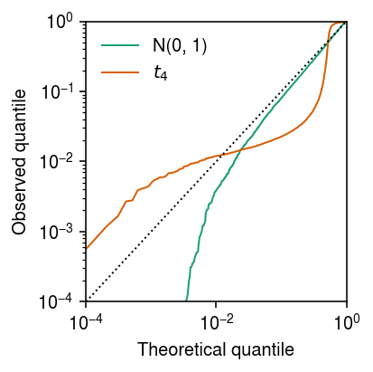
Check whether the SE is calibrated.
n_trials = 50 n_bootstraps = 400 n_cells = 100 s = 1e4 result = [] for trial in range(n_trials): for theta in np.arange(-12, -2, 1): x = st.poisson(s * np.exp(theta)).rvs(size=n_cells) thetahat = np.log(x.sum()) - np.log(n_cells * s) se = np.sqrt(1 / x.sum()) bootstraps = [] for b in range(n_bootstraps): x = st.poisson(s * np.exp(theta)).rvs(size=n_cells) bootstraps.append(np.log(x.sum()) - np.log(n_cells * s)) se_b = np.array(bootstraps).std() result.append([theta, trial, thetahat, se, se_b]) result = pd.DataFrame(result, columns=['theta', 'trial', 'thetahat', 'se', 'se_b'])
plt.clf() plt.gcf().set_size_inches(2.5, 2.5) plt.xscale('log') plt.yscale('log') plt.scatter(result['se'], result['se_b'], s=1, c='k') lim = [1e-3, 1.5] plt.plot(lim, lim, lw=1, ls=':', c='r') plt.xlim(lim) plt.ylim(lim) plt.xlabel('Analytic SE') plt.ylabel('Bootstrap SE') plt.tight_layout()

Power (single cells as units)
To generate true positives treating cells as units, generate null data as above, and then use binomial thinning (Gerard 2019) to introduce effects of a given magnitude at effect genes. Assume effects are drawn from a scaled \(t\) distribution \(g = 0.1 t_1\).
result = dict() for n_cells in (25, 50, 100): result[n_cells] = evaluate_power(dat, g=st.t(scale=0.1, df=1).rvs, n_cells=n_cells, min_cells=n_cells, n_trials=1) result = pd.concat(result).reset_index(drop=True)
cm = plt.get_cmap('Paired') plt.clf() fig, ax = plt.subplots(1, 3, sharey=True) fig.set_size_inches(5, 2.5) labels = ['LV-EB', 'PM-EB', 'PM-Z'] for a, (t, g) in zip(ax, result[result['fdr_method'] == 'fdr_bh'].groupby('n_cells')): a.boxplot(g.pivot_table(columns='trial', index=['method', 'test'], values='power'), widths=0.35, medianprops={'color': 'k'}, flierprops={'marker': '.', 'markersize': 2}) a.set_xticklabels(labels, rotation=90) a.set_xlabel('Method') a.set_title(f'$n$={t}') ax[0].set_ylabel(r'Power (FDR 10%)') fig.tight_layout()

Type 1 error rate (donors as units)
To generate null data, first randomly assign cells from a homogeneous sample to donors, then randomly assign donors to groups.
result = pd.concat( evaluate_type1_by_donor(dat, b=b, n_donors=4, n_cells=100, min_cells=100, n_trials=10) for b in np.log(np.linspace(1, 2, 4)))
plt.clf() fig, ax = plt.subplots(1, 4, sharey=True) fig.set_size_inches(5.5, 2.5) labels = ['LV-EB', 'LV-Z', 'GAM-EB', 'GAM-Z', 'PM-EB', 'PM-Z'] for a, (k, g) in zip(ax, result.groupby('b')): a.boxplot(g.pivot_table(index=['method', 'test'], columns='trial', values='fdp'), widths=0.35, medianprops={'color': 'k'}, flierprops={'marker': '.', 'markersize': 2}) a.axhline(y=0.01, c='r', lw=1, ls=':') a.set_xticklabels(labels, rotation=90) a.set_title(f'$b$={np.exp(k):.3g}') a.set_xlabel('Method') ax[0].set_ylabel('Type 1 error rate') ax[0].set_ylim(0, 0.1) fig.tight_layout()

Unequal size factors
Generate null data with different size factors by assigning different numbers of cells to different donors.
x1, onehot1 = simulate_null(dat[dat.obs['cell_type'] == 'b_cells'], n_donors=4, n_cells=50, min_counts=1, to_array=False) x2, onehot2 = simulate_null(dat[dat.obs['cell_type'] == 'b_cells'], n_donors=4, n_cells=100, min_counts=1, to_array=False) mix = x1.concatenate(x2) sc.pp.filter_genes(mix, min_counts=10) onehot = ss.block_diag([onehot1, onehot2], format='csr') design = np.ones((8, 2)) design[:4,0] = 0
Look at the distribution of size factors.
plt.clf() plt.gcf().set_size_inches(2.5, 2.5) plt.boxplot((onehot.T @ mix.X.sum(axis=1)).A.reshape(2, -1).T, widths=0.5, medianprops={'color': 'k'}) plt.xlabel('Group') plt.ylabel('Size factor') plt.tight_layout()
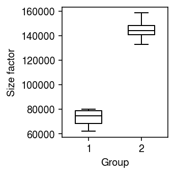
Fit limma-voom, followed by EB shrinkage of standard errors.
(estimate_moderated_t(estimate_limma_voom(mix.X.A, onehot, design)) < 0.01).mean()
0.0
Look at the point mass estimates.
thetahat = np.log((onehot.T @ mix.X).A + 1) - np.log(onehot.T @ mix.X.sum(axis=1).A) plt.clf() plt.gcf().set_size_inches(2.5, 2.5) plt.scatter(thetahat[:4].ravel(), thetahat[4:].ravel(), s=1, c='k', alpha=0.1) lim = [-15, 3] plt.plot(lim, lim, c='r', lw=1, ls=':') plt.xlim(lim) plt.ylim(lim) plt.xlabel('Est mean (50 cells)') plt.ylabel('Est mean (100 cells)') plt.tight_layout()
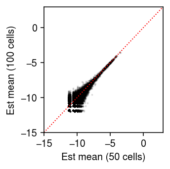
Power (donors as units)
To generate true positives treating donors as units, randomly sample cells from a homogeneous population, randomly assign cells to donors, randomly assign donors to groups, and then thin effect genes.
result = pd.concat( evaluate_power_by_donor(dat, g=st.t(scale=0.1, df=1).rvs, n_donors=n_donors, n_cells=50, n_trials=10) for n_donors in (4, 16, 64))
cm = plt.get_cmap('Paired') plt.clf() fig, ax = plt.subplots(1, 3, sharey=True) fig.set_size_inches(5, 2.5) labels = ['LV-EB', 'LV-Z', 'GAM-EB', 'GAM-Z', 'PM-EB', 'PM-Z'] for a, (k, g) in zip(ax, result[result['fdr_method'] == 'fdr_bh'].groupby('n_donors')): a.boxplot(g.pivot_table(columns='trial', index=['method', 'test'], values='power'), widths=0.4, medianprops={'color': 'k'}, flierprops={'marker': '.', 'markersize': 2}) a.set_xticklabels(labels, rotation=90) a.set_xlabel('Method') a.set_title(f'$n$={k}') ax[0].set_ylabel(r'Power (FDR 10%)') fig.tight_layout()